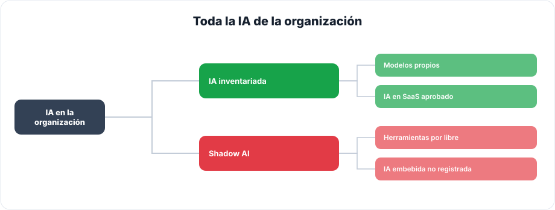
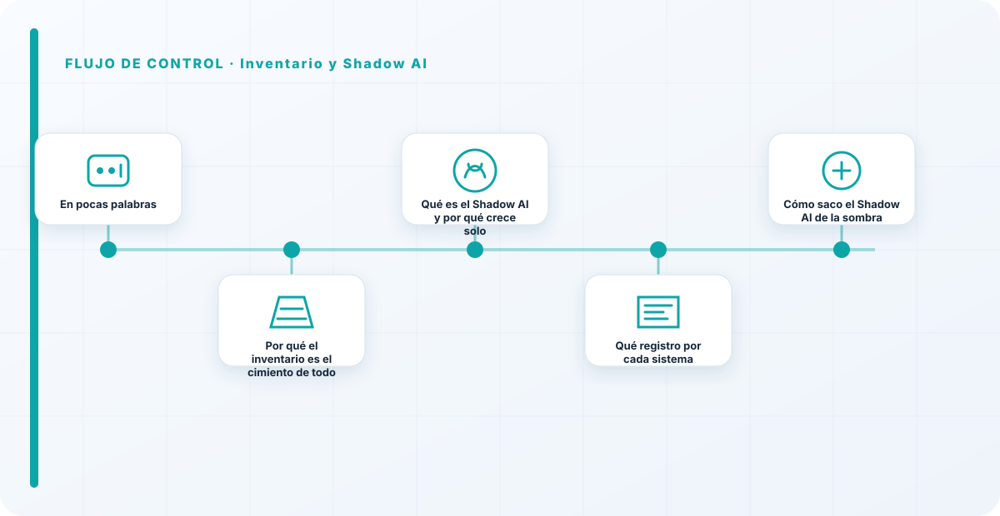
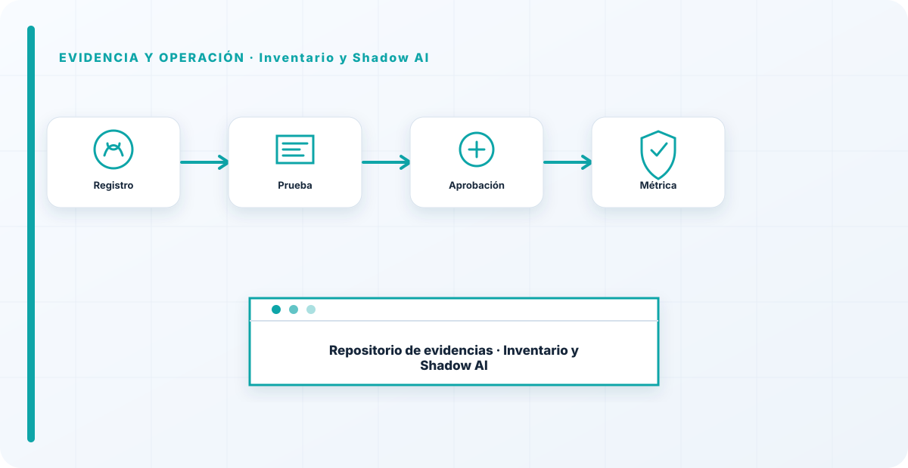

En pocas palabras
Todo el gobierno de modelos empieza en el mismo sitio: saber qué IA tienes. Y casi nunca se sabe. Cuando llego a una organización y pido el inventario de sistemas de IA, o no existe, o es una lista de tres cosas cuando en realidad hay treinta funcionando. Ese hueco entre lo que crees que tienes y lo que tienes de verdad —los modelos por libre, la IA embebida en herramientas que nadie registró, los pilotos que se quedaron en producción— es lo que llamamos Shadow AI, y es exactamente donde vive el riesgo que nadie está mirando. La regla es tan simple como incómoda: no puedes gobernar lo que no sabes que existe.
Por qué el inventario es el cimiento de todo
Un inventario de IA no es burocracia; es el mapa sin el cual todo lo demás es ciego. No puedes clasificar el riesgo de un sistema que no sabes que usas. No puedes aplicarle un control, ni auditarlo, ni cumplir el AI Act sobre él. Cada decisión de gobierno —qué se aprueba, qué se vigila, qué se retira— presupone que sabes qué hay delante. Por eso el inventario es lo primero que construyo, antes que políticas y comités: sin el mapa, gobiernas a ciegas y solo te enteras de los problemas cuando ya son incidentes.
Lo veo como la base de una pirámide. Si el inventario está mal, todo lo que construyas encima hereda el error: harás una política preciosa que no cubre la mitad de tus sistemas, montarás un comité que decide sobre lo que conoce e ignora lo que no, y pasarás una auditoría sobre una foto incompleta de la realidad. Un inventario incompleto no es medio bueno; es peligroso, porque da una falsa sensación de control.

El árbol lo resume bien: toda la IA de tu organización se parte en dos, la que está inventariada —modelos propios, IA en SaaS aprobado— y la que no. El objetivo de todo este trabajo es que la rama de la derecha, la del Shadow AI, se encoja hasta casi desaparecer.
Qué es el Shadow AI y por qué crece solo
El Shadow AI es toda la IA que se usa en la organización sin que el gobierno lo sepa. Es importante entender que casi nunca nace de la mala fe: nace de la velocidad y de la facilidad. Cualquier persona se registra en una herramienta de IA en dos minutos, con su correo corporativo, y empieza a pegarle información para ir más rápido. No está intentando saltarse nada; está intentando hacer su trabajo. Y crece porque, muy a menudo, la alternativa oficial es más lenta, más incómoda, o directamente no existe.
Ese origen inocente no lo hace menos peligroso. Cada uso en la sombra es un riesgo doble: por un lado, datos que salen del control de la organización hacia una herramienta que nadie ha evaluado; por otro, decisiones que se toman con ayuda de una IA sin ninguna supervisión. Un ejemplo típico que me encuentro: alguien de finanzas pegando datos de clientes en una herramienta gratuita para que le resuma un informe. No hay mala intención, pero acaba de sacar datos sensibles de casa. Mientras exista Shadow AI a esa escala, tu inventario es una ilusión y tu gobierno protege solo la parte que ves.

Qué registro por cada sistema
Para que el inventario sea útil y no un adorno, registro por cada IA lo mínimo que me permite gobernarla: qué es y para qué se usa, quién es su propietario con nombre, qué datos toca y con qué clasificación, en qué categoría de riesgo del AI Act cae, y en qué estado del ciclo de vida está. Ni más ni menos: un inventario con cincuenta campos que nadie rellena es tan inútil como no tenerlo. La clave no es la exhaustividad del formulario, es que esté vivo y que cada entrada tenga un dueño.
Y aquí incluyo algo que la gente olvida: la IA embebida. No solo cuentan los modelos que montas tú; cuenta la IA que viene dentro del SaaS que ya usas, la función "inteligente" que tu proveedor activó en la última actualización. Esa IA también toca tus datos y también hay que inventariarla, aunque no la hayas desplegado tú.
Cómo saco el Shadow AI de la sombra
Combatir el Shadow AI tiene dos patas, y la segunda es la que casi todo el mundo olvida. La primera es la detección: revisar los SaaS contratados, mirar el tráfico y los gastos en busca de herramientas de IA, y —lo más eficaz— preguntar a los equipos sin ánimo de castigar, con la actitud de "cuéntame qué usas para ayudarte a usarlo bien". La segunda pata, la decisiva, es ofrecer una vía oficial fácil para pedir herramientas nuevas. Si conseguir la IA aprobada es un calvario de semanas y formularios, la gente se irá a la sombra por mucho que se lo prohíbas, porque tiene trabajo que sacar.
Una vez fuera de la sombra, cada uso se clasifica y entra en el inventario, o se sustituye por una alternativa aprobada. El inventario se mantiene vivo integrando este paso en el día a día: cada vez que aparece un uso nuevo, se registra según aparece, no en una revisión anual que siempre llega tarde.
Perseguir el Shadow AI solo con prohibiciones no funciona, lo he visto fracasar mil veces. La gente no usa herramientas por libre para hacer daño, las usa porque le resuelven un problema y la vía oficial no. Si quieres que el Shadow AI baje de verdad, haz que pedir una herramienta aprobada sea más fácil que buscarse una por su cuenta. La zanahoria vence al palo, siempre. El día que tu proceso oficial sea más rápido que registrarse en una web, el problema empieza a resolverse solo.
Los errores que veo una y otra vez
- No tener inventario y creer que se conoce toda la IA de memoria.
- Inventariar solo lo propio y olvidar la IA embebida en el SaaS que ya usas.
- Combatir el Shadow AI solo con prohibiciones, sin ofrecer una vía fácil.
- Un inventario que se hace una vez para una auditoría y se queda congelado.
- Registrar sistemas sin propietario, con lo que nadie responde por ellos.
- Un formulario tan largo que nadie lo rellena bien.
Cómo lo llevaría a un entorno real
Cuando aterrizo inventario y shadow ai en una organización, no empiezo por comprar una herramienta ni por redactar veinte páginas. Empiezo por dibujar qué ocurre hoy: quién solicita el cambio, quién lo aprueba, qué sistemas intervienen, qué datos cruzan el proceso y quién se entera cuando algo falla. Ese dibujo suele descubrir más problemas que cualquier checklist. En gobierno de modelos, lo peligroso no es solo carecer de controles; también lo es creer que existen porque alguien los escribió una vez.
Después separo lo imprescindible de lo deseable. Lo imprescindible debe poder comprobarse: un responsable identificado, una regla clara, una evidencia fechada y un mecanismo para reaccionar. En este caso revisaría especialmente Inventario, Shadow y responsable. No me vale una respuesta del tipo «lo gestiona el proveedor» o «eso lo mira seguridad». Necesito saber qué persona toma la decisión, con qué información y dentro de qué plazo.
La implantación debe crecer con el riesgo. Un piloto interno puede funcionar con una ficha breve y una revisión manual. Un sistema que afecta a clientes, empleados, dinero o información sensible necesita segregación de funciones, pruebas independientes, monitorización y un expediente mantenido. Mi criterio es sencillo: cuanto más difícil sea deshacer el daño, más fuerte debe ser la barrera antes de producción.
Decisiones que deben quedar por escrito
Hay decisiones que no deberían vivir en una reunión ni en un mensaje de chat. Para inventario y shadow ai dejaría documentados el alcance, los supuestos, los límites de uso, las excepciones aceptadas y las condiciones que obligan a detener o reevaluar. El documento no tiene que ser enorme, pero sí debe permitir que otra persona entienda por qué se hizo lo que se hizo.
También registraría quién puede cambiar control, quién valida evidencia y quién recibe las alertas relacionadas con Inventario. Cuando esas tres responsabilidades se mezclan, aparece el clásico problema: el mismo equipo construye, aprueba y declara que todo funciona. No siempre se puede separar por completo, sobre todo en organizaciones pequeñas, pero al menos debe existir una revisión por alguien que no dependa del éxito inmediato del despliegue.
Las excepciones merecen un tratamiento propio. Una excepción sin fecha de caducidad acaba convirtiéndose en la arquitectura real. Por eso exigiría motivo, riesgo aceptado, responsable, compensaciones, fecha de revisión y criterio de cierre. Si falta uno de esos elementos, no es una excepción gestionada; es una deuda invisible.

Un ejemplo práctico
Imaginemos que un equipo quiere incorporar inventario y shadow ai a un servicio que ya está en producción. La propuesta promete reducir tiempos y automatizar tareas, pero utiliza componentes que cambian con frecuencia. Antes de aprobarlo, pediría una prueba limitada, un inventario de dependencias, un flujo de datos y una definición clara de qué acciones quedan fuera del alcance.
Durante la prueba recogería resultados normales y casos límite. No solo miraría si funciona; comprobaría qué ocurre cuando faltan datos, cambia una versión, se pierde conectividad, llega una entrada manipulada o un usuario intenta superar sus permisos. Ahí es donde se ve si el diseño aguanta. En muchas pruebas felices todo parece seguro porque nadie ha intentado romper la hipótesis de partida.
Si los resultados son aceptables, la salida a producción tendría condiciones: versión fijada, configuración aprobada, logs disponibles, responsables de guardia, procedimiento de rollback y revisión tras las primeras semanas. Si alguno de esos elementos no existe, prefiero retrasar el despliegue. Un día de demora suele ser más barato que investigar después un comportamiento que nadie puede reconstruir.
Qué evidencias guardaría
Para demostrar que el control funciona conservaría evidencias que cuenten una historia completa, no capturas sueltas. La historia debe enlazar necesidad, decisión, implementación, prueba y operación. En inventario y shadow ai eso incluye como mínimo la ficha del activo, el diagrama vigente, la configuración aprobada, el resultado de las pruebas y el registro de cambios.
No guardaría información por acumular. Si los logs contienen prompts, documentos, datos personales o secretos, aplicaría minimización, control de acceso y retención. La evidencia debe ayudar a investigar y auditar sin crear una segunda fuga de información. Es frecuente endurecer el sistema principal y dejar un repositorio de evidencias abierto a demasiadas personas.
- Propietario y finalidad de inventario y shadow ai, con fecha de revisión.
- Inventario de Inventario, Shadow y dependencias asociadas.
- Criterios de aceptación y resultados sobre responsable y control.
- Configuración efectiva, versión y aprobación del cambio.
- Alertas, incidentes, excepciones y acciones correctivas cerradas.
Señales de que el control no está funcionando
El primer síntoma es que nadie sabe responder con rapidez quién es el responsable. El segundo es que la documentación describe una versión distinta de la que está operando. El tercero es que las alertas existen, pero llegan a un buzón que nadie revisa. Cuando aparecen esos tres síntomas, el problema no es tecnológico: el control se ha desconectado de la operación.
También desconfío de las métricas demasiado perfectas. Cero incidentes, cero excepciones y cien por cien de cumplimiento pueden significar excelencia, pero con frecuencia significan que no estamos mirando. Prefiero indicadores que enseñen tendencia: tiempo de corrección, antigüedad de excepciones, cobertura de pruebas, cambios sin revisión y reincidencias.
Por último, revisaría el comportamiento después de cada cambio significativo. En IA, una actualización de modelo, dataset, prompt, herramienta, permiso o proveedor puede alterar el riesgo sin cambiar el nombre del servicio. Si el proceso solo reevalúa cuando se crea un proyecto nuevo, se quedará ciego durante la mayor parte de la vida útil.
Mi criterio de cierre
Considero que inventario y shadow ai está razonablemente controlado cuando el equipo puede explicar el proceso sin depender de una sola persona, reconstruir una decisión con evidencias y detener el servicio sin improvisar. No busco perfección documental; busco que la organización pueda tomar decisiones repetibles bajo presión.
El cierre no consiste en marcar todas las casillas. Consiste en demostrar que los riesgos relevantes tienen propietario, que los controles se prueban y que las desviaciones producen una acción. Si la evidencia no cambia ninguna decisión, probablemente estamos generando burocracia. Si una decisión importante no deja evidencia, estamos creando fragilidad.
Este enfoque es el que intento mantener en toda CyberLibrary AI: explicar el control de forma que lo entienda negocio, pero con suficiente profundidad para que arquitectura, seguridad, auditoría y operaciones puedan aplicarlo de verdad.
Referencias y marcos relacionados
Contenido educativo y técnico. No sustituye asesoramiento jurídico ni una auditoría formal.